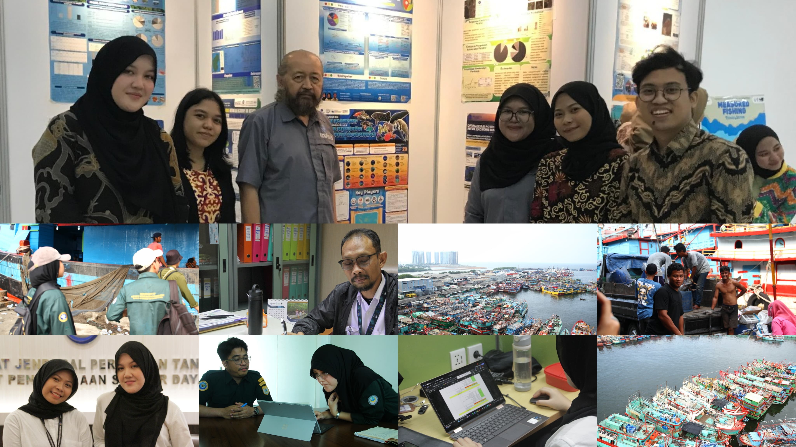

INTERNSHIP | Ministry of Marine Affairs and Fisheries
Directorate of Fisheries Resources Management, Jakarta

Internship Experience
Ministry of Marine Affairs and Fisheries – Directorate of Fisheries Resource Management (EEZ and High Seas Division)
During my internship, I was involved in various activities related to aquatic resource management, including data collection and analysis, assisting in field surveys, and supporting research on fisheries sustainability. I had the opportunity to collaborate with professionals in the field, which enhanced my practical skills in environmental monitoring, data processing, and report writing. This experience deepened my understanding of how theoretical knowledge is applied in real-world conservation and management efforts, particularly in the context of sustainable fisheries and marine ecosystems.
- Assisted in data compilation and analysis related to Tuna, Skipjack, and Mackerel (TCT) fisheries, particularly in the context of Regional Fisheries Management Organizations (RFMOs) such as IOTC and WCPFC.
- Supported the preparation of technical documents and reports used in national and international fisheries meetings.
- Contributed to reviewing policies and regulations related to fisheries management in the Exclusive Economic Zone (EEZ) and high seas.
- Participated in discussions regarding Indonesia’s position and compliance in regional fisheries governance.
- Conducted literature reviews on sustainable practices and data-driven approaches in managing TCT fisheries.
- Visited PPS Nizam Zachman (Jakarta Fishing Port) to observe port-based fisheries operations, including catch documentation and monitoring processes.
- Gained hands-on experience in collaborative work with fisheries officers and learned about the operational structure of government fisheries management.